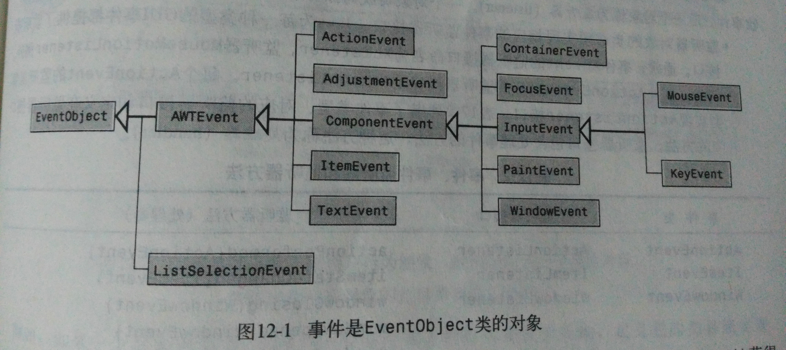

本文总结源自《Java语言程序设计》原书第五版，作者为Y.daniel Liang，习题及编程练习均参照此书。
主要内容
所有非GUI程序都是按过程的顺序执行的，Java GUI程序设计是事件驱动的。本章介绍有关Java事件驱动程序（event-driven programming）的概念和技术。
事件和事件源
事件（event）：程序发生的某些事情的信号。如：移动鼠标、点击鼠标、按照键盘键等。- 事件
源对象（source object）：某组件上发生了事件，该组件就被称为源对象。 - 一个事件是事件类的实例，事件类的根类是java.util.EventObject。可以使用该类中的
getSource()方法获得事件源对象。 - 如果一个组件能够发生某个事件，那么这个组件的任何子类都能够发生同样的事件。如Component类是所有GUI类的父类，因此所有GUI组件都可以发生
MouseEvent、keyEvent、FocusEvent和ComponentEvent事件。

事件的监听、注册和处理
- Java使用事件委托处理模型来处理事件：在源对象的外部用户行为触发事件，关心该事件的对象接收事件，后一个对象称为
监听器（listener）。 - 一个对象要成为源对象上事件的监听器，需要具备两个条件：
- 监听器对象的类必须实现相应的事件监听接口（xListener）。监听器接口包含处理事件的方法，这种方法称为
处理器（handler）。 - 监听对象必须由源对象注册。注册方法依据事件的类型而定。一个源对象拥有一个监听器列表，通过调用监听器对象上的处理器，通知所有的已注册监听器对事件做出响应。
- 监听器对象的类必须实现相应的事件监听接口（xListener）。监听器接口包含处理事件的方法，这种方法称为
鼠标事件
在一个组件上按下、释放、点击、移动、拖动鼠标时就会产生鼠标事件。鼠标的事件对象捕获事件。
- Java提供了两个处理鼠标事件的监听器接口
MouseListener和MouseMotionListener。前者监听鼠标的按下、释放、移入、移出或点击等行为，后者监听鼠标的拖动和移动等行为。 - java.awt.Point类封装平面上一个点的信息。可以用该类辅助处理鼠标事件。
- MouseEvent类继承自InputEvent类。
键盘事件
- 键盘事件中捕获的键都是表示字符统一码的整数，包括字母与数字键、功能键、Tab键和回车键等。它们可以分别由
getKeyChar()和getKeyCode()方法获得。 - 当击打一个统一码字符键时，就会调用
KeyTyped处理器。
仅有一个焦点组件能够接收KeyEvent、要使一个组件成为焦点组件，需要将属性isFocusable设置为true。
定时器类Timer
定时器类java.swing.Timer就是一个按照预定频率触发ActionEvent事件的源组件，它不是GUI组件。1
new Timer(delay, actionEvent).start();
复习小结
- 在事件处理中，忘记注册监听器是一个常见的错误。如果源对象没法通知监听器，监听器就不能响应事件。
- 如果一个监听器被源对象注册两次，当事件发生时，监听器的处理方法将会被调用两次。
- 源对象和监听器对象可能是相同的对象。（同一个类）
编程练习
习题12.7：
本题的难点在于所画的线需要从框架的中心开始。由于setvisible()方法才会调用paint()方法画图，在此之前，无论是JFrame还是JPanel，使用getWidth()和getHeight()方法得到的值都为0，因此需要想办法在框架画出来之后设置起始点的坐标。方法有两种：方法一：监听键盘事件的方法中，使用除功能键以外的键进行初始化设置，此方法不提倡；
1
2
3
4
5
6
7
8
9
10
11
12
13
14
15
16
17
18
19
20@Override
public void keyPressed(KeyEvent e) {
switch (e.getKeyCode()) {
case KeyEvent.VK_UP:
y -= 1;
break;
case KeyEvent.VK_DOWN:
y += 1;
break;
case KeyEvent.VK_LEFT:
x -= 1;
break;
case KeyEvent.VK_RIGHT:
x += 1;
break;
// default:
// x = this.getWidth() / 2;
// y = this.getHeight() / 2;
// lineStart.move(x,y);
}方法二：添加窗口监听事件，这样就能确保在最开始将坐标设置好。由于JPanel是不可见的，无法实现WindowListener接口，因此在JFrame实现该接口，并在相应的方法中传入正确的框架中心坐标。
1
2
3
4
5
6
7
8
9
10
11
12
13
14public class $12_7 extends JFrame implements WindowListener {
public $12_7() throws HeadlessException {
this.addWindowListener(this);
}
@Override
public void windowActivated(WindowEvent e) {
PaintPanel p = new PaintPanel(this.getWidth() / 2, this.getHeight() / 2);
this.getContentPane().add(p);
p.setFocusable(true);
}
}
习题12.3 12.4 12.5 12.6 12.7 12.8源代码见我的Github： chapter12